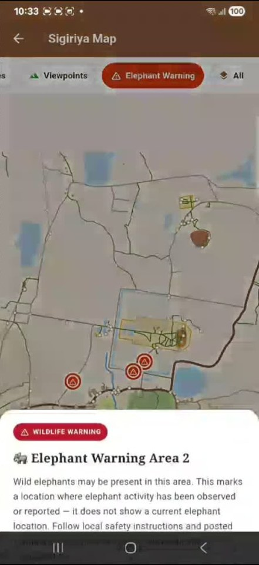

Prototype readyMonth 01 · Jan 2027
Sigiriya
Lion Rock, frescoes, Mirror Wall, Lion's Paw and water gardens. Our research prototype site.
Each site is an offline “site pack” — the recognition model, stories, voice data, maps and routes for that place. Buy one site, or get them all with the All-Sites Heritage Pass.

Lion Rock, frescoes, Mirror Wall, Lion's Paw and water gardens. Our research prototype site.
The cave temple complex and its painted ceilings and statues.
Sacred city stupas, monasteries and ancient reservoirs.
Medieval capital — Gal Vihara, royal palace and quadrangle.
Temple of the Tooth and the last royal capital.
Colonial-era ramparts, lighthouse and old town streets.
The cradle of Buddhism in Sri Lanka.
The rock fortress and its ornate stairway.
Star-shaped fort of the northern peninsula.
Free from Google Play or the App Store. The basic version is free.
On Wi-Fi at home or at your hotel — no data needed later.
Scan, ask and navigate on site, fully offline.